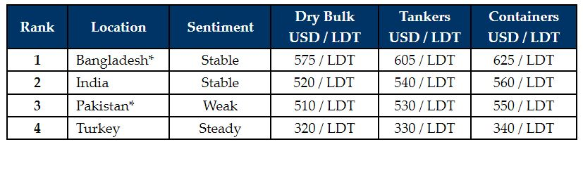

inWeekly Demolition Reports10/07/2023

With many sub-continent yards still closed post Eid holidays, mixed in with the ongoing monsoon season,and all of it brewing in a stew of a total lack of tonnage, it has certainly been another lethargic and inactive week (and a majority of the year so far) for recycling sales as we enter the 3rd quarter of 2023 and prices being quoted are so unworkably below market expectations at present, a bounce back anytime soon seems unlikely.
As such, before proposing any further candidates, most Cash Buyers and (especially) Ship Owners have decided to continue to wait and watch the markets for greater stability and a better handle on pricing.
Meanwhile, after a couple of volatile quarters, fundamentals presently seem to have leveled out across the board in the Indian sub-continent and even Turkish recycling markets, where steel plate prices and currencies (except in Pakistan) seem to have found a brief plateau of peace.
Moreover, an ongoing lack of workable Letters of Credit (L/Cs) & financing in Pakistan and even in a post-budget Bangladesh is once again driving prices and demand down as the Central Government Bank in Bangladesh seeks to impose tougher limits on the expenditure of its precious U.S. Dollar reserves.
Overall, amidst the ongoing crippling lack of tonnage, those Owners with units closer to recycling age have been seriously reconsidering placing their vessels back into service and are invariably adding to the growing lack of tonnage.
With monsoon’s being the only silver-lining for the sub-continent markets – in that cutting activities come to a crawl as it is – it certainly seems to be a quieter July (and perhaps even August) headed the industry’s way.
For week 27 of 2023, GMS demo rankings / pricing for the week are as below.

📄 Download PDF: Ship-recycling-market-insight-week-27-2023-Lethargic.pdfSource: GMS,Inc. ,https://www.gmsinc.net/gms_new/index.php/web